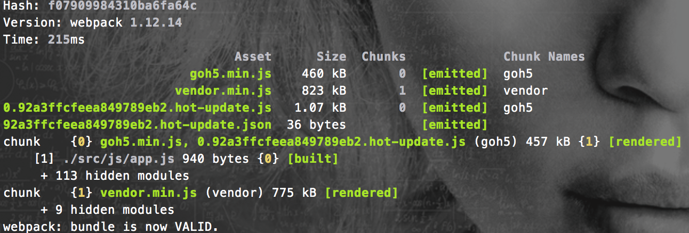

webpack-workflow
前端工作流中要解决的问题
- 资源管理：模块化、组件化、依赖管理等
- 开发流程：dev、debug、proxy、build、deploy
- 周边工具：图形化界面、命令行辅助、自动化工程
简介
- webpack官网
- Webpack 是当下最热门的前端资源模块化管理和打包工具。它
- 能把散碎的静态资源通过一定的规则打包在一起
- 还可以require几乎所有的静态资源，包括但不限于CommonJs 模块、 AMD 模块、 ES6 模块、CSS、图片、 JSON、Coffeescript、 LESS、 Vue、 Jade、Ejs 等等
- 还可以将代码切割成不同的chunk，实现按需加载，异步加载
- 还可以极精细的控制所有静态资源的版本
- 还可以实现代码热替换，开发模式下，不用刷新浏览器，不用实时编译，自身的socket-io已经把内存中的代码换成最新的
- 还可以
SourceUrls和SourceMaps，易于调试 - 还可以和前端最新的技术栈完美融合（Vue、React），针对这两个在webpack中有一整套的工具链
- 还可以使用
Plugin插件，实现各种定制化任务 - 还可以和
gulp/grunt等构建工具协同作战，完成极其复杂的任务 - 还原生支持增量编译，发布代码再也不用等个好几分钟
资源管理
模块化
用
webpack来做模块化，简直神器。前端的模块化一直是一个很受人关注的问题，不同的加载器实现方式都不一样。
lithe/requireJs/seaJs，这样的预加载器都有自己的一套实现方式，一定程度上解决了js的模块化问题，但是不同的实现方式，让我们不得不对不同的库做兼容性处理，让加载器能够识别，无疑增加了工作量和降低了模块的通用度。即使现在ES6提出了统一的标准，但是离实际使用还有很长的距离。所以，有一个足够灵活，足够强大的模块加载器是个必要的选择。
在
webpack中，同时支持 CommonJS、AMD和ES6，灵活性有保证。并且在
webpack的设计理念中，所有的静态资源都是模块，所以借助强大的loader系统几乎可以加载任意类型的静态资源，并且对模块的输出结果可以做非常精细的控制，根据不同的配置可以达到任意想要的结果。loaders: [{ test: /.js$/, loader: 'jsx-loader?harmony' }, { test: /.vue$/, loader: 'vue-loader' },{ test: /.css$/, loader: 'style-loader' },{ test: /\.(jpe?g|png|gif|svg)$/i, loaders: [ 'image?{bypassOnDebug: true, progressive:true, optimizationLevel: 3, pngquant:{quality: "65-80"}}', 'url?limit=10000&name=img/[hash:8].[name].[ext]', ] }]这是
webpack配置文件中的loaders部分，其中，test是正则匹配，匹配到的文件将使用相应的loader去解析，然后这些文件就成为了模块，可以在其它地方引用。比如：// a.js // 加载js var login = require('./src/js/conf/login/login.js'); // js文件会被webpack包装，并赋予单独ID，exports出去 // 加载css require('./src/css/login.css'); // css文件会被以style标签插入到head中，当然，也可以通过ExtractTextPlugin这样的插件以link标签插入到页面中 // 加载图片 var btnImg = require('./src/img/btn.png'); var img = document.createElement('img'); img.src = btnImg; // 根据上面的配置，小于10k的图片直接dataurl到src中，并且打包后自动添加hash值，当然，在js中引用，hash值部分也相应的会变化。 // 加载vue单文件组件 var loginCom = require('./src/js/components/login.vue'); // vue有单独的loader读取vue单文件组件 // 所有模块的加载可以做很多灵活的配置，比如，文件hash值、小于一定大小的图片dataurl、打包后文件命名等 // jade模版，ejs模版，less文件，sass文件都可以直接require，不用预编译，直接用！组件化
抛开现在流行的组件化解决方案，光以
webpack的角度来看，如果模版，样式，脚本，都可以作为模块来引入，这就使得封装组件变的很简单。比如：// 搜索组件 // js/component/search/index.js require('js/component/search/index.css'); var tpl = require('js/component/search/template.ejs'); var htmlStr = tpl({searchContent: options.searchStr}); var launchSearch = function(options){} module.exports = { launchSearch: launchSearch, somethingelse: 'balabala' };使用：
// js/app.js var searchComponent = require('js/component/search/index.js'); var options = { searchStr: '水果' // ... } searchComponent.launchSearch(options);这样的开发方式无疑能够极大降低维护成本，当然，如果和现在流行的前端框架，如React、Vue结合起来实现组件化，代码组织会更加清晰，自由度也更高，展开讲又是一个大话题，按下不表。
还是贴一下伪代码吧。。以
Vue为例// alert.vue <template> <div class="alert" v-show="alertConfig.show" :class="alertConfig.type" transition="fade"> <h4>{{alertConfig.msg}}</h4> </div> </template> <style> // css 样式 </style> <script> var Vue = require('Vue'); var Alert = Vue.extend({ name: 'Alert', prop: ['alertConfig'] }) module.exports = Alert; </script>使用
// main.vue（同样是一个组件，可能被其它组件（如根组件）依赖） <templeate> <m-alert :alert-config="alertConfig"></m-alert> </template> <script> var Vue = require('Vue'); var Alert = require('alert.vue'); var Main = Vue.extend({ name: 'Main', data: function(){ return { alertConfig: { show: false, type: 'info', // info/success/warning/erro msg: '提示信息' } } }, components: { 'm-alert': Alert } }) module.exports = Main; </script>这样的
.vue组件通过webpack中的vue-loader插件就可以完成打包。
依赖管理
没有什么好说的。。。
npm。
毕竟绝大部分的流行库都在npm上，也都支持模块加载的方式。不排除有一些纯js库（jq插件）需要手动封装下。其实也很简单，如果都遵循CommonJs的加载方式，而且其中没有其它依赖的话，直接require即可，如果有依赖，大部分也是jq等，在文件最前面声明下var $ = require('jQuery')即可。
这样，一个工程只需要维护一份package.json，不管是开发用的包，还是构建用的包都可以统一管理。
开发流程
对于前端的开发流程，一直的想法是，我们能有一个统一的入口工具，不管是命令行还是图形化界面，可以把调试，代理，构建等一系列操作整合起来，并且尽可能的简化这样的操作，开发不用过多的关注构建问题，也不用为调试、构建浪费更多的精力。
dev、debug
基于
webpack的开发流程主要有两种方式：webpack的实时构建模式webpack --watch每次修改代码都会实时的构建，增量的，很快，即使是用了uglify实时构建压缩也很快（不超过1s）webpack-dev-serverwebpack-dev-server是一个小型的express服务器，它的原理就是使用webpack-dev-middleware中间件来为通过webpack生成的静态资源提供web服务。它的内部通过socket.io连接客户端，可以实时发送编译状态的信息到客户端，从而达到客户端代码的实时热更新，也就是HMRHot Module Replacement。webpack-dev-server支持命令行模式和NodeJs模式，命令行模式就是直接打开webpack-dev-server本地服务器，参数默认，配置灵活性稍低，但是简单快捷，如下：// --line 行内模式 | --hot 热替换 webpack-dev-server --line --hot在项目根目录行执行上面的命令之后，本地的
webpack-dev-server服务器已经启动，此目录下的由webpack生成的静态资源都将被这个本地服务器托管。以 GoH5 为例，把页面内引用的资源改为
8080端口下对应的文件并加入http://localhost:8080/webpack-dev-server.js，此时代码热更新已经生效：<!DOCTYPE html> <html> <head> <meta charset="utf-8"> <meta name="description" content="GoH5，一款可视化的H5编辑器，拖拽、动画、事件，神奇的H5。"> <meta name="keywords" content="H5,可视化,cms,编辑器"> <meta name="viewport" content="width=device-width, initial-scale=1.0"> <meta name="renderer" content="webkit"> <title>Go H5</title> <link rel="stylesheet" type="text/css" href="/back/dist/css/goh5.min.css?ver=1.0.3"/> </head> <body> <div id="app"> <router-view></router-view> </div> <script src="http://localhost:8080/webpack-dev-server.js"></script> <script type="text/javascript" src="http://localhost:8080/vendor.min.js?ver=1.0.3"></script> <script type="text/javascript" src="http://localhost:8080/goh5.min.js?ver=1.0.3"></script> </body> </html> // 因为我的应用服务启动在 3030 端口，所以这里的地址写了绝对地址，如果同端口，直接写文件名即可在控制台可以看到
[HMR] Vue component hot reload shim applied. // 不同的热重载提示信息不同（Vue/React） [WDS] Hot Module Replacement enabled.如果本地修改了代码可以看到
[WDS] App updated. Recompiling... [WDS] App hot update...同时，控制台也会输出相关的编译信息：

一个字。。。快。。。而且，浏览器并不用刷新呀 (有一定限定条件，并不是一切代码都可以热重载)
放一张官网的gif

上面的例子主要集中在Vue上，其实大同小异，并且
webpack提供了webpack-dev-middleware中间件，可以定制一个本地的服务，完成很多任务。
所以我觉得，前端的开发流程如果有一个统一的本地服务，可能性无极限。
proxy
线上代码的代理调试，借助
host，借助Fiddler，借助wamp，其实。。// webpack.config.js { devServer: { proxy: { '/some/path*': { target: 'https://js.meixincdn.com', secure: false, }, }, }, }当然，这样的代理不够灵活，而且不能代理html，但是如果借助本地的服务，我们可以这么做
// 先行配置host，可以手动，也可以像 `fd-server` 有个图形化界面，然后 var koa = require('koa'); var proxy = require('koa-proxy'); var app = koa(); app.use(proxy({ host: 'https://localhost:8080/', match: /\/js.meixincdn.com\// }));上面达到的功能就是把
js.meixincdn.com域名的资源转发到webpack-dev-server，然后就可以愉快的开始开发了
build、deploy
这一块我的想法还是，放到测试机上去。。
测试机上可以跑一个
gulp watch和webpack --watch的任务，本地提交了src目录下的文件，测试机检测到文件更新，直接编译，这样的编译都是增量的，肯定很快，然后再该怎么上线怎么上线，怎么发布怎么发布。本地就可以直接忽略dist目录的改变，不提交其中的内容。还有一点，我是觉得 php 的 smarty 模版可以前端维护，就算不行，静态资源那一块也一定前端维护，这样不管是改时间戳还是直接hash，都很灵活啊～
周边工具
图形化界面、命令行辅助、自动化工程，高大上的整套解决方案，想想就激动。。。